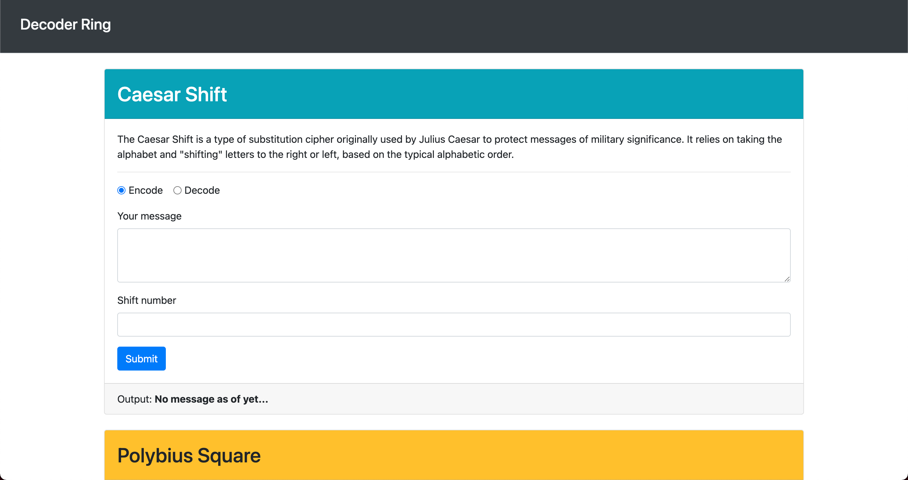
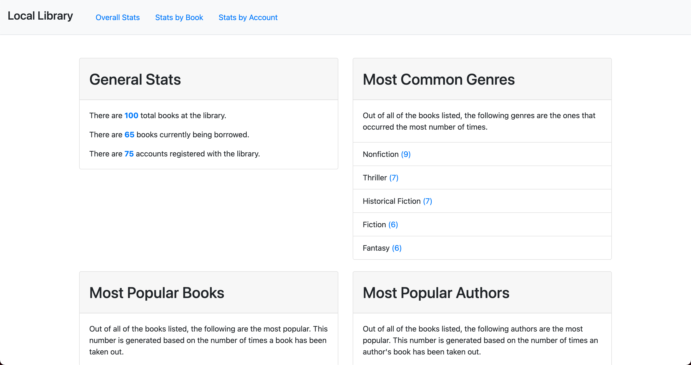

Hello, there! I'm Chris.
Welcome to my webpage!
I am an aspiring Software Engineer located just outside of Dallas, Texas.
Feel free to explore my page and learn a bit more about me. You will find information about my passion for software development and other details about my life as a father, friend, and student. Below, you can send me a message or choose one of my social media accounts to contact me. I hope you enjoy your time here, and I look forward to hearing from you!
A little about Me
For as long as I can remember, I have had a passion for deconstructing and rebuilding things. I would take apart remotes and toys and then put them back together. As I grew older, remotes and toys became computers and consoles. Nowadays, I find I spend a lot of my time trying to take apart or tinker with the functionality of webpages or conceptualizing different applications one could create.
It is out of this curiosity that my desire to learn to program was born. Too many of my interactions with software, applications, hardware, websites, etc., had me asking, "How would I improve this?" I have now learned the tools and techniques to build, amend, and deconstruct all of these things of interest to me. Working alongside others with these same interests has been one of the most rewarding aspects of this journey. Bouncing ideas off of one another, piggy-backing on one another's suggestions, and creating things that far exceed the skillset of just one of us is one of my favorite things about this career field. I look forward to continuing this aspect in particular by becoming part of a team of Software Developers.
Outside of coding, I am an avid gym-goer. My journey in the gym mirrors that which I expect my journey as a developer will be. That is to say, the more I know, and the better I get in the gym, the more aware I become about just how much I don't know and how much more I can learn. That excites me about fitness, and it excites me about programming.
For you and your company, I can help design and build algorithms. I can produce efficient and elegant code to meet the requirements of you or your client. I can test and deploy programs and troubleshoot, debug, maintain, and improve existing software. Finally, I will develop technical documentation for future projects.
My interests include:
- Family Time
- Reading
- Lifting Weights
- PC Gaming
- Cooking
Portfolio
Decoder Ring
 Application RepoThis application was developed for a friend who needed a decoder ring application and can be used by anyone trying to encode or decode messages. I used HTML, CSS, and JS to build the display and functionality of this web application. The bulk of the work centered around manipulating text strings or number couplings and converting them into encoded or decoded messages through switch-case, conditionals, ternaries, etc. I used Test-Driven development to troubleshoot as I constructed the application. From this project, I learned a bit more about array methods as a way to manipulate data in ways I hadn't before.
Local Library Interface
 Application RepoThis project was one requested by my local library; they wanted an interface that would display different metrics on their website. I designed the algorithms that would display data using HTML, CSS, and JavaScript. I utilized Test-Driven development to troubleshoot my code as I worked through the project. I used high-order functions and other modern javascript techniques to provide a means for the library to display things like popular genres or authors and provide a search mechanism for a given user, author, book, etc. From this project, I learned more about data types and the construction of objects on their own or inside of arrays.